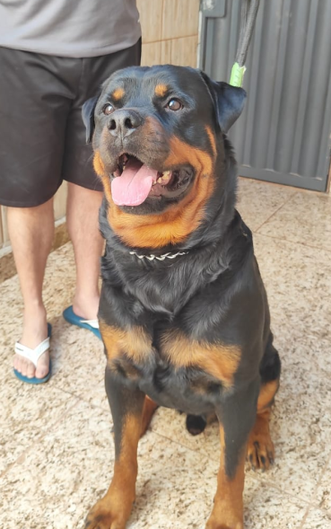
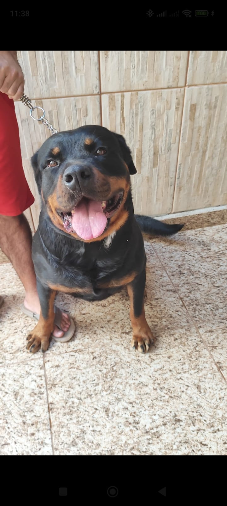
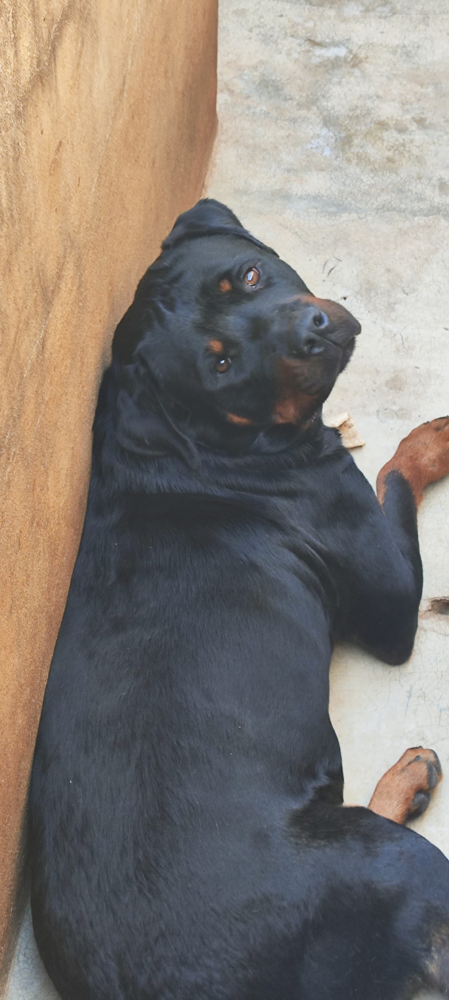

Notícias, informações e conteúdos sobre cães, cuidados e a
rotina do Canil Von Oliveira.

Conheça a rotina do Canil Von Oliveira
31/08/2026 -
Gilmar Rodrigues de Oliveira -
Canil
No Canil Von Oliveira, cada cão recebe atenção, cuidados e
acompanhamento durante sua rotina. Nosso objetivo é
proporcionar um ambiente adequado, saudável e confortável
para os animais.
Leia mais →

A importância dos cuidados com os cães
29/08/2026 -
Gilmar Rodrigues de Oliveira -
Cuidados
Alimentação adequada, higiene, exercícios e acompanhamento
veterinário são alguns dos cuidados importantes para
garantir qualidade de vida aos cães.
Leia mais →

Exercícios e atividades para os cães
27/08/2026 -
Gilmar Rodrigues de Oliveira -
Bem-estar
As atividades físicas ajudam os cães a gastar energia,
manter uma boa condição física e estimular seu comportamento
natural.
Leia mais →

Alimentação e qualidade de vida
25/08/2026 -
Gilmar Rodrigues de Oliveira -
Alimentação
Uma alimentação equilibrada é fundamental para o
desenvolvimento e a manutenção da saúde dos cães. Cada
animal possui necessidades específicas.
Leia mais →

Um pouco mais sobre nossos cães
23/08/2026 -
Gilmar Rodrigues de Oliveira -
Novidades
Acompanhe através do nosso site as novidades do Canil Von
Oliveira, conheça melhor nossos cães e confira informações
sobre nossa rotina.
Leia mais →